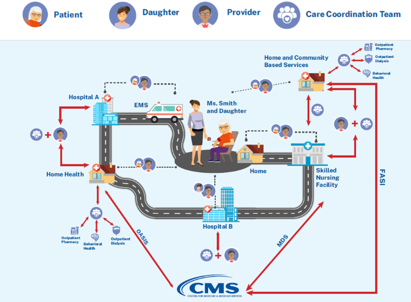
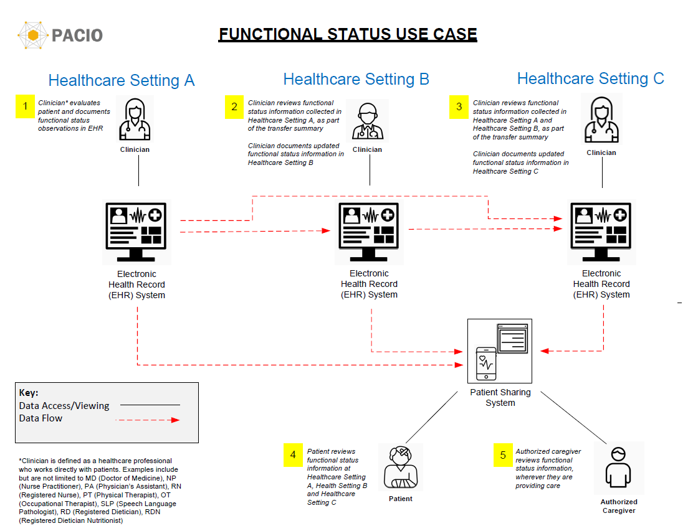

PACIO Functional Status Implementation Guide
0.1.0 - CI Build
PACIO Functional Status Implementation Guide
0.1.0 - CI Build
PACIO Functional Status Implementation Guide - Local Development build (v0.1.0). See the Directory of published versions
Post-acute care patients are typically complex from a healthcare perspective and have many stops during their healthcare journey (as shown in Figure 1). As the patient moves from one healthcare setting to another, it is important that their functional and cognitive data travel with them so that the new healthcare setting has the most complete information about that patient so they can provide the best care. The below example uses the following Post-Acute Care assessments: FASI: Functional Assessment Standardized Items MDS: Minimum Data Set OASIS: Outcome and Assessment Information Set

Figure 1: Example Post-acute Care Patient Healthcare Journey
In Figure 2, the patient is admitted to Healthcare Setting A due to the result of an adverse event, such as a fall. Healthcare setting A performs a set of mobility functional assessments, first by a registered nurse (e.g. at admission) and later, by a physical therapist (e.g. at discharge). The results of the mobility assessments are captured in the electronic health record (EHR) system of Healthcare Setting A.
Upon discharge, Healthcare Setting A refers the patient to Healthcare Setting B. When the patient arrives at Healthcare Setting B, their clinicians can retrieve the functional assessments performed on the patient at Healthcare Setting A, as part of the transfer summary, using the profiles for exchanging functional status data defined in this Implementation Guide.
The patient and their family can also access the assessments from Healthcare Setting A at any time through a mobile/web application, so that they are informed about the patient’s care, can track progress, and can be more engaged in their healthcare decisions.

Figure 2: Functional Status Use Case
IG © 2020+ . Package hl7.fhir.us.pacio-fs#0.1.0 based on FHIR 4.0.1. Generated 2021-06-09
Links: Table of Contents |
QA Report
| Version History |
Search |
 |
Propose a change
|
Propose a change